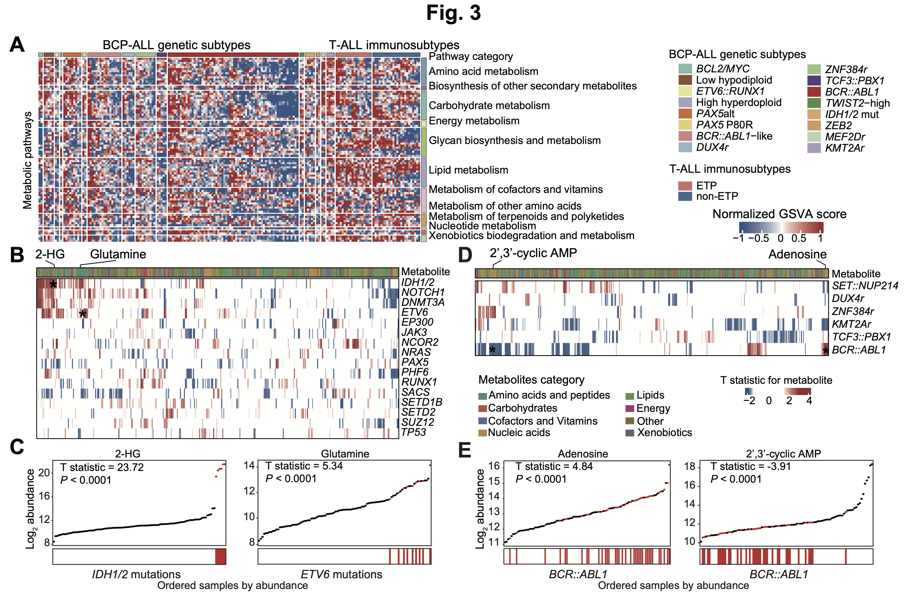
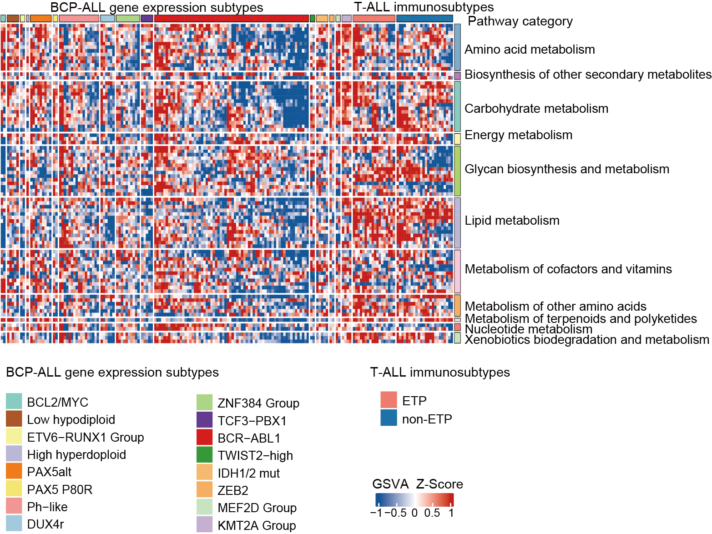
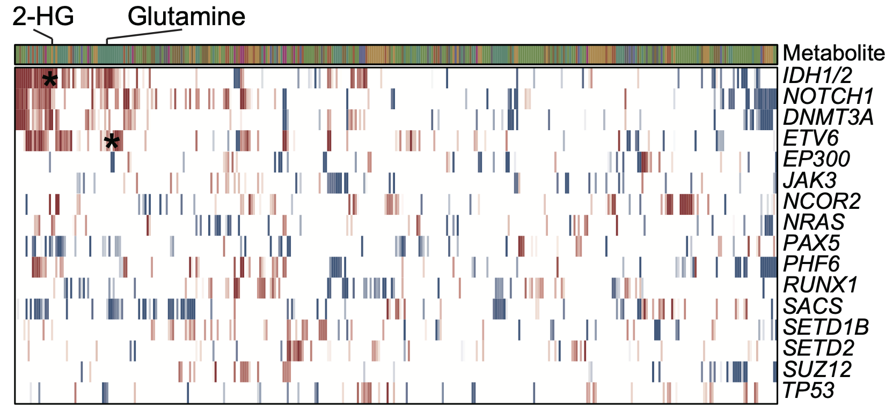
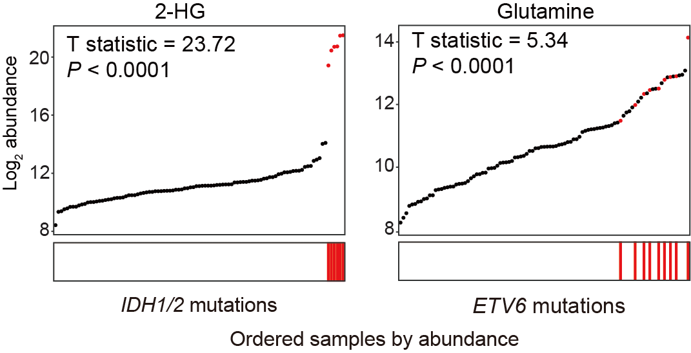
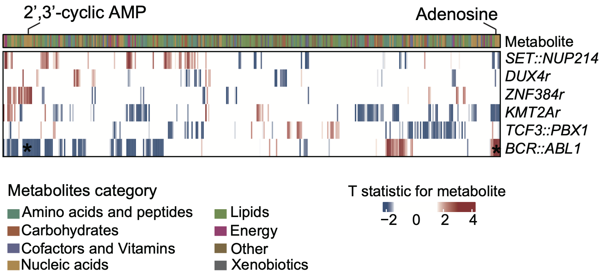
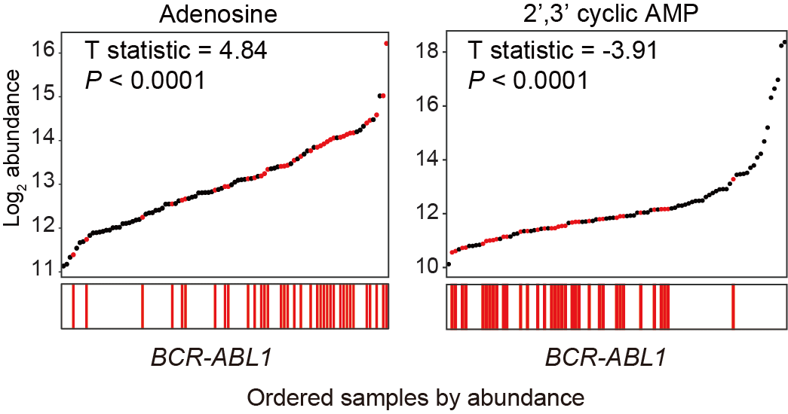
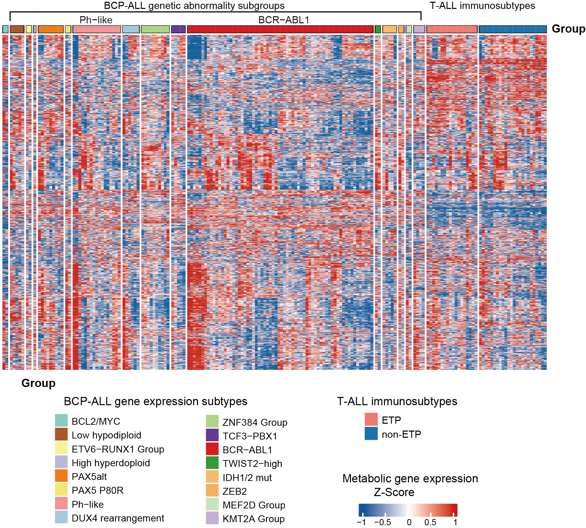
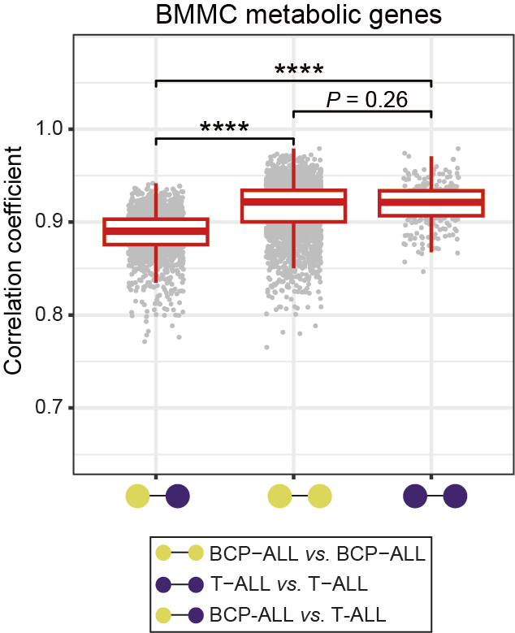
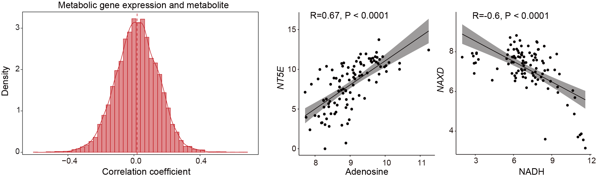

Chapter 18 Figure 3

Figure 3: Relationship between intracellular metabolome, transcriptome and genomic features in BCP-ALL and T-ALL.
A. Gene set variation analysis (GSVA) of enrichment scores for metabolic pathways in BCP-ALL and T-ALL samples at the RNA-seq level. Each subtype exhibits both individuality and potential commonality.
B. The heatmap illustrates the associations between the metabolites abundance (column) of ALL BMMC and the presence of mutations within the indicated genes (row). The mutations include high frequency somatic mutations within reported ALL-related genes. T statistics are calculated by a linear regression model to represent the correlation level.
C. Correlations between IDH1/2 mutations and 2-HG (left panel), and ETV6 mutations and glutamine (right panel). All samples were ordered based on the abundance (y-axis) of indicated metabolites, and the ones with corresponding mutations were highlighted in red and indicated by the corresponding lines displayed in x-axis.
D. The heatmap illustrates the associations between the abundance of metabolites and the presence of indicated well-known gene fusions. T statistics were calculated by a linear regression model.
E. Correlations between the BCR-ABL1 fusion and the abundance of adenosine (left panel), as well as 2’,3’-cyclic AMP (right panel). Fusion genes were shown as lines and samples were ordered based on the abundance (y-axis) of indicated metabolites.
18.1 (A) GSVA Scores for Metabolic Pathways
Gene set variation analysis (GSVA) scores for metabolic pathways in BCP-ALL and T-ALL samples at the RNA-seq level. Each subgroup exhibits both individuality and potential commonality.
library(GSVA)
library(ComplexHeatmap)
library(dplyr)
library(ggplot2)
library(survival)
library(survminer)
library(MNet)
#-------------------------------------------------------------------------------
# Step 1: Load data and set parameters
#-------------------------------------------------------------------------------
sample_info <- readxl::read_excel("raw_data/Sample_RNA_190_fusion_mutation_v1130.xlsx") %>%
as.data.frame() %>%
dplyr::select(bianhao,RNA_id,Prediction_Check,Subtype) %>%
dplyr::filter(Subtype %in% c("ETP","non_ETP","non_Ph","Ph")) %>%
dplyr::mutate(Subtype=ifelse(Subtype %in% c("ETP","non_ETP"),Subtype,Prediction_Check)) %>%
dplyr::mutate(Subtype=factor(Subtype,levels=c("BCL2/MYC","Low hypodiploid","ETV6-RUNX1 Group","High hyperdoploid","PAX5alt","PAX5 P80R","Ph-like","DUX4","ZNF384 Group","TCF3-PBX1","BCR-ABL1","TWIST2-high","IDH","ZEB2","MEF2D Group","KMT2A Group","ETP","non_ETP")))
sel_gmt=GSEABase::getGmt("raw_data/KEGG_metabo_genes.gmt",sep = "\t")
head(sel_gmt)
sets=as.list(sel_gmt)
dat <- readRDS("raw_data/20231113_RNA_ALL_VST_coding.rds") %>%
as.data.frame() %>%
dplyr::select(sample_info$RNA_id)
#-------------------------------------------------------------------------------
# Step 2: Gene set variation analysis (GSVA)
#-------------------------------------------------------------------------------
exprMatrix=dat
dim(exprMatrix)
gsva_matrix<- gsva(as.matrix(exprMatrix), sel_gmt,method='ssgsea',kcdf='Gaussian')
write.table(gsva_matrix,"result/Figure3/3A_gsva.txt",quote=F,sep="\t")
gsva_matrix1<- t(scale(t(gsva_matrix)))
write.table(gsva_matrix1,"result/Figure3/3A_gsva_norm.txt",quote=F,sep="\t")
q1 <- RColorBrewer::brewer.pal(n = 12, name = "Paired")
q2 <- c("#FB8072","#8DD3C7", "#BEBADA","#FDB462","#CCEBC5", "#FFED6F")
q12 <- c(q1,q2)
names(q12) <- unique(sample_info$Subtype)
left_ann <- PathwayExtendData[,4:5] %>%
unique() %>%
dplyr::arrange(match(kegg_pathwayname,rownames(gsva_matrix)))
a <- data.frame(kegg_pathwayname=rownames(gsva_matrix)) %>%
dplyr::left_join(left_ann,by="kegg_pathwayname")
right_col <- RColorBrewer::brewer.pal(n = 11, name = "Set3")
names(right_col) <- unique(a$kegg_category)
right_annotation=rowAnnotation(
Subtype=a$kegg_category,col=list(Subtype=right_col),
show_annotation_name = c(T,T),border = c(T,T) ,
simple_anno_size = unit(4, "mm"),gap = unit(1, "mm"))
top_annotation = HeatmapAnnotation(
Subtype=sample_info$Subtype,col=list(Subtype=q12),
show_annotation_name = c(T,T), border = c(T,T) ,
simple_anno_size = unit(4, "mm"),gap = unit(1, "mm"))
col_fun = circlize::colorRamp2(c(-1, 0, 1), c("#00599F", "white", "#D01910"))
p_cell <- Heatmap(gsva_matrix1,height=unit(18,"cm"),name="Our RNA-seq Data",
cluster_row_slices = F,clustering_method_rows = "ward.D",
cluster_column_slices = F,
clustering_method_columns = "ward.D2",
column_split = sample_info$Subtype,
top_annotation =top_annotation,
right_annotation = right_annotation,
row_split = a$kegg_category,
col = col_fun,
show_column_names = TRUE,
row_names_gp = gpar(fontsize = 6),
column_names_gp = gpar(fontsize = 5))
pdf("result/Figure3/3A_GSVAheatmap.pdf",width = 20,height = 15)
p_cell
dev.off()
18.2 (B) Mutations and Metabolites
The heatmap illustrates the associations between the metabolites abundances (column) of ALL BMMC and the presence of mutations within the indicated genes (row). The mutations include high frequency somatic mutations within reported ALL-related genes. T statistics are calculated by a linear regression model to represent the correlation level.
library(dplyr)
#-------------------------------------------------------------------------------
# Step 1: Load mutation data
#-------------------------------------------------------------------------------
NOTCH1 <- data.table::fread("raw_data/temp/Fig4B.all_NOTCH1.txt") %>%
as.data.frame() %>%
dplyr::mutate(type="NOTCH1")
RUNX1 <- data.table::fread("raw_data/temp/Fig4B.all_RUNX1.txt") %>%
as.data.frame() %>%
dplyr::mutate(type="RUNX1")
PHF6 <- data.table::fread("raw_data/temp/Fig4B.all_PHF6.txt") %>%
as.data.frame() %>%
dplyr::mutate(type="PHF6")
NRAS <- data.table::fread("raw_data/temp/Fig4B.all_NRAS.txt") %>%
as.data.frame() %>%
dplyr::mutate(type="NRAS")
ETV6 <- data.table::fread("raw_data/temp/Fig4B.all_ETV6.txt") %>%
as.data.frame() %>%
dplyr::mutate(type="ETV6")
DNMT3A <- data.table::fread("raw_data/temp/Fig4B.all_DNMT3A.txt") %>%
as.data.frame() %>%
dplyr::mutate(type="DNMT3A")
PAX5 <- data.table::fread("raw_data/temp/Fig4B.all_PAX5.txt") %>%
as.data.frame() %>%
dplyr::mutate(type="PAX5")
TP53 <- data.table::fread("raw_data/temp/Fig4B.all_TP53.txt") %>%
as.data.frame() %>%
dplyr::mutate(type="TP53")
IDH <- data.table::fread("raw_data/temp/Fig4B.all_IDH.txt") %>%
as.data.frame() %>%
dplyr::mutate(type="IDH")
SETD1B <- data.table::fread("raw_data/temp/Fig4B.all_SETD1B.txt") %>%
as.data.frame() %>%
dplyr::mutate(type="SETD1B")
NCOR2 <- data.table::fread("raw_data/temp/Fig4B.all_NCOR2.txt") %>%
as.data.frame() %>%
dplyr::mutate(type="NCOR2")
SUZ12 <- data.table::fread("raw_data/temp/Fig4B.all_SUZ12.txt") %>%
as.data.frame() %>%
dplyr::mutate(type="SUZ12")
SETD2 <- data.table::fread("raw_data/temp/Fig4B.all_SETD2.txt") %>%
as.data.frame() %>%
dplyr::mutate(type="SETD2")
JAK3 <- data.table::fread("raw_data/temp/Fig4B.all_JAK3.txt") %>%
as.data.frame() %>%
dplyr::mutate(type="JAK3")
SACS <- data.table::fread("raw_data/temp/Fig4B.all_SACS.txt") %>%
as.data.frame() %>%
dplyr::mutate(type="SACS")
EP300 <- data.table::fread("raw_data/temp/Fig4B.all_EP300.txt") %>%
as.data.frame() %>%
dplyr::mutate(type="EP300")
## Select relevant mutations
dat <- rbind(NOTCH1,RUNX1,PHF6,NRAS,ETV6,DNMT3A,PAX5,TP53,IDH,SETD1B,NCOR2,SUZ12,SETD2,JAK3,SACS,EP300) %>%
dplyr::select(name,type,t)
dat1 <- reshape2::acast(dat,name ~ type) %>%
as.data.frame() %>%
dplyr::select(IDH,NOTCH1,DNMT3A,ETV6,EP300,JAK3,NCOR2,NRAS,PAX5,PHF6,RUNX1,SACS,SETD1B,SETD2,SUZ12,TP53,everything()) %>%
t()
write.table(dat1,"result/Figure3/3B_CorMutations.txt",quote=F,sep="\t")
#-------------------------------------------------------------------------------
# Step 2: Heatmap of mutations
#-------------------------------------------------------------------------------
library(ComplexHeatmap)
kid <- readxl::read_excel("raw_data/cell_metabolite_info_all_v1109.xlsx") %>%
as.data.frame() %>%
dplyr::filter(refmet_name %in% colnames(dat1)) %>%
dplyr::arrange(match(refmet_name,colnames(dat1)))
cols <- c("Amino acids and peptides" ="#1B9E77",
"Carbohydrates"="#D95F02","Cofactors and Vitamins"="#7570B3",
"Energy"="#E7298A","Lipids"="#66A61E","Nucleic acids"="#E6AB02",
"Other"="#A6761D","Xenobiotics"="#666666")
top_annotation = HeatmapAnnotation(
category=kid$class,
show_annotation_name = c(T),
col=list(category=cols),
border = c(T) ,
simple_anno_size = unit(4, "mm"),gap = unit(1, "mm")
)
if(0) {
mark_met <- c("2-Hydroxyglutaric acid","L-Glutamine")
met_pos <- which(rownames(t(dat1)) %in% mark_met)
right_anno <- rowAnnotation(mark_met = anno_mark(at = met_pos,
labels = rownames(t(dat1))[met_pos]))
}
col_fun = circlize::colorRamp2(c(-2, -1.5,0, 1.5,3), c("#00599F","white","white","white", "#D01910"))
pdf("result/Figure3/3B_MutationHeatmap.pdf",width=10,height = 6)
Heatmap(dat1,top_annotation=top_annotation,show_column_names = T,column_names_gp = gpar(fontsize = 1),
col = col_fun,cluster_rows = F,show_column_dend=F,
border_gp = gpar(col = 'black', lty = 1))
dev.off()
18.3 (C) IDH1/2 and ETV6 Mutations
Correlations between IDH1/2 mutations and 2-HG (left panel) and ETV6 mutations and glutamine (right panel). All samples are ordered based on the abundance (y-axis) of indicated metabolites, and the ones with corresponding mutations are highlighted in red and indicated by the corresponding lines displayed in x-axis.
library(dplyr)
library(MNet)
library(ggplot2)
library(ComplexHeatmap)
#-------------------------------------------------------------------------------
# Step 1: Load mutation data
#-------------------------------------------------------------------------------
sample_info <- readxl::read_excel("raw_data/sample_clinical_201_info.xlsx") %>%
as.data.frame() %>%
dplyr::filter(!is.na(METc_BM_D0_ID)) %>%
dplyr::filter(!is.na(RNA_id_raw))
mutation_b <- data.table::fread("raw_data/mutation_B_v1114_all.txt") %>%
as.data.frame() %>%
dplyr::select(V2,V17) %>%
unique()
mutation_t <- data.table::fread("raw_data/mutation_T_v1114_all.txt") %>%
as.data.frame() %>%
dplyr::select(V2,V17) %>%
unique()
#-------------------------------------------------------------------------------
# Step 2: IDH1/2 and 2-Hydroxyglutaric acid
#-------------------------------------------------------------------------------
## IDH1/2
mutation <- rbind(mutation_b,mutation_t) %>%
dplyr::filter(V17 %in% c("IDH1","IDH2"))
dat <- data.table::fread("raw_data/cell_dat_final_reuslt_v0329.txt") %>%
as.data.frame() %>%
tibble::column_to_rownames("label") %>%
dplyr::select(all_of(sample_info$METc_BM_D0_ID))
## 2-Hydroxyglutaric acid
meta_filter="2-Hydroxyglutaric acid"
metabolite_diff <- data.table::fread("raw_data/temp/Fig4B.all_IDH.txt")
dat_melt_filter <- dat %>%
tibble::rownames_to_column(var="id") %>%
reshape2::melt() %>%
dplyr::filter(id==meta_filter) %>%
dplyr::left_join(sample_info,by=c("variable"="METc_BM_D0_ID")) %>%
dplyr::arrange(value) %>%
dplyr::left_join(metabolite_diff,by=c("id"="name")) %>%
dplyr::mutate(type=ifelse(RNA_id_raw %in% mutation$V2,"IDH","non_IDH")) %>%
dplyr::mutate(variable=factor(variable,levels = variable))
## Visualization
t=unique(round(dat_melt_filter$t,2))
p=unique(round(dat_melt_filter$P.Value,3))
p1 <- ggplot(dat_melt_filter,aes(variable,log2(value+1)))+
geom_point(aes(color=as.factor(type)))+
scale_color_manual(values=c("red","black"))+
theme_bw()+
theme(axis.text.x=element_blank(),axis.ticks.x=element_blank(),
panel.grid = element_blank())+
labs(x=NULL,title=paste0(meta_filter,"\nT statistic = ",t,"; p=",p))+
theme(legend.position='none')
sample_order <- data.frame(Meta_ID=dat_melt_filter$variable,type=factor(dat_melt_filter$type))
p2 <- ggplot(sample_order,aes(Meta_ID,y=3))+
geom_bar(aes(fill=type,color=type),stat="identity",width=0.5)+
labs(x="Ordered samples")+
theme_bw()+
theme(axis.text=element_blank(),axis.ticks = element_blank(),panel.grid = element_blank())+
scale_y_continuous(expand = c(0, 0))+
scale_fill_manual(values=c("red","white"))+
scale_color_manual(values=c("red","white"))+
theme(legend.position='none',axis.title.y= element_text(size=5))
p <- cowplot::plot_grid(p1,p2,nrow=2,ncol=1,rel_heights=c(10,3),rel_widths = c(4, 4),align="v")
ggsave("result/Figure3/3C_2-HG.pdf",p)
#-------------------------------------------------------------------------------
# Step 3: ETV6 and L-Glutamine
#-------------------------------------------------------------------------------
## ETV6
sample_info <- readxl::read_excel("raw_data/sample_clinical_201_info.xlsx") %>%
as.data.frame() %>%
dplyr::filter(!is.na(METc_BM_D0_ID)) %>%
dplyr::filter(!is.na(RNA_id_raw))
mutation_b <- data.table::fread("raw_data/mutation_B_v1114_all.txt") %>%
as.data.frame() %>%
dplyr::select(V2,V17) %>%
unique()
mutation_t <- data.table::fread("raw_data/mutation_T_v1114_all.txt") %>%
as.data.frame() %>%
dplyr::select(V2,V17) %>%
unique()
mutation <- rbind(mutation_b,mutation_t) %>%
dplyr::filter(V17 %in% c("ETV6"))
dat <- data.table::fread("raw_data/cell_dat_final_reuslt_v0329.txt") %>%
as.data.frame() %>%
tibble::column_to_rownames("label") %>%
dplyr::select(all_of(sample_info$METc_BM_D0_ID))
## L-Glutamine
meta_filter="L-Glutamine"
metabolite_diff <- data.table::fread("raw_data/temp/Fig4B.all_ETV6.txt")
dat_melt_filter <- dat %>%
tibble::rownames_to_column(var="id") %>%
reshape2::melt() %>%
dplyr::filter(id==meta_filter) %>%
dplyr::left_join(sample_info,by=c("variable"="METc_BM_D0_ID")) %>%
dplyr::arrange(value) %>%
dplyr::left_join(metabolite_diff,by=c("id"="name")) %>%
dplyr::mutate(type=ifelse(RNA_id_raw %in% mutation$V2,"ETV6","non_ETV6")) %>%
dplyr::mutate(variable=factor(variable,levels = variable))
## Visualization
t=unique(round(dat_melt_filter$t,2))
p=unique(round(dat_melt_filter$P.Value,3))
p1 <- ggplot(dat_melt_filter,aes(variable,log2(value+1)))+
geom_point(aes(color=as.factor(type)))+
scale_color_manual(values=c("red","black"))+
theme_bw()+
theme(axis.text.x=element_blank(),axis.ticks.x=element_blank(),
panel.grid = element_blank())+
labs(x=NULL,title=paste0(meta_filter,"\nT statistic = ",t,"; p=",p))+
theme(legend.position='none')
sample_order <- data.frame(Meta_ID=dat_melt_filter$variable,type=factor(dat_melt_filter$type))
p2 <- ggplot(sample_order,aes(Meta_ID,y=3))+
geom_bar(aes(fill=type,color=type),stat="identity",width=0.5)+
labs(x="Ordered samples")+
theme_bw()+
theme(axis.text=element_blank(),axis.ticks = element_blank(),panel.grid = element_blank())+
scale_y_continuous(expand = c(0, 0))+
scale_fill_manual(values=c("red","white"))+
scale_color_manual(values=c("red","white"))+
theme(legend.position='none',axis.title.y= element_text(size=5))
p <- cowplot::plot_grid(p1,p2,nrow=2,ncol=1,rel_heights=c(10,3),rel_widths = c(4, 4),align="v")
ggsave("result/Figure3/3C_Glutamine.pdf",p)
18.4 (D) Fusions and Metabolites
The heatmap illustrates the associations between the abundances of metabolites and the presence of indicated well-known gene fusions. T statistics are calculated by a linear regression model.
library(dplyr)
#-------------------------------------------------------------------------------
# Step 1: Load fusion data
#-------------------------------------------------------------------------------
BCR <- data.table::fread("raw_data/temp/Fig4D.all_BCR-ABL1.txt") %>%
as.data.frame() %>%
dplyr::mutate(type="BCR-ABL1")
DUX4 <- data.table::fread("raw_data/temp/Fig4D.all_DUX4 rearrangement.txt") %>%
as.data.frame() %>%
dplyr::mutate(type="DUX4")
ZNF384 <- data.table::fread("raw_data/temp/Fig4D.all_ZNF384 fusion.txt") %>%
as.data.frame() %>%
dplyr::mutate(type="ZNF384")
TCF3 <- data.table::fread("raw_data/temp/Fig4D.all_TCF3-PBX1.txt") %>%
as.data.frame() %>%
dplyr::mutate(type="TCF3-PBX1")
SET <- data.table::fread("raw_data/temp/Fig4D.all_SET-NUP214.txt") %>%
as.data.frame() %>%
dplyr::mutate(type="SET-NUP214")
KMT2A <- data.table::fread("raw_data/temp/Fig4D.all_KMT2A rearrangement.txt") %>%
as.data.frame() %>%
dplyr::mutate(type="KMT2A")
dat <- rbind(BCR,DUX4,ZNF384,TCF3,SET,KMT2A) %>%
dplyr::select(name,type,t)
dat1 <- reshape2::acast(dat,name ~ type) %>%
t()
write.table(dat1,"result/Figure3/3D_CorFusions.txt",quote=F,sep="\t")
#-------------------------------------------------------------------------------
# Step 2: Heatmap of fusions
#-------------------------------------------------------------------------------
library(ComplexHeatmap)
kid <- readxl::read_excel("raw_data/cell_metabolite_info_all_v1109.xlsx") %>%
as.data.frame() %>%
dplyr::filter(refmet_name %in% colnames(dat1)) %>%
dplyr::arrange(match(refmet_name,colnames(dat1)))
cols <- c("Amino acids and peptides" ="#1B9E77",
"Carbohydrates"="#D95F02","Cofactors and Vitamins"="#7570B3",
"Energy"="#E7298A","Lipids"="#66A61E","Nucleic acids"="#E6AB02",
"Other"="#A6761D","Xenobiotics"="#666666")
top_annotation = HeatmapAnnotation(
category=kid$class,
show_annotation_name = c(T),
col=list(category=cols),
border = c(T) ,
simple_anno_size = unit(4, "mm"),gap = unit(1, "mm")
)
if (0) {
mark_met <- c("Inosine","2',3' cyclic AMP")
met_pos <- which(rownames(t(dat1)) %in% mark_met)
right_anno <- rowAnnotation(mark_met = anno_mark(at = met_pos,
labels = rownames(t(dat1))[met_pos]))
}
col_fun = circlize::colorRamp2(c(-2, -1.5,0, 1.5,3), c("#00599F","white","white","white", "#D01910"))
pdf("result/Figure3/3D_FusionHeatmap.pdf",width=8,height = 4)
Heatmap(dat1,top_annotation=top_annotation,show_column_names = T,column_names_gp = gpar(fontsize = 1),
col = col_fun,cluster_columns = T,show_row_names=T,
show_column_dend=F,
border_gp = gpar(col = 'black', lty = 1),show_row_dend = F)
dev.off()
18.5 (E) BCR-ABL1 Fusion
Correlations between the BCR-ABL1 fusion and the abundances of adenosine (left panel) and 2’,3’ cyclic AMP (right panel). Fusion genes-related metabolites are shown as lines and samples are ordered based on the abundance (y-axis) of indicated metabolites.
library(dplyr)
library(MNet)
library(ggplot2)
library(ComplexHeatmap)
#-------------------------------------------------------------------------------
# Step 1: Load fusion data
#-------------------------------------------------------------------------------
sample_info <- readxl::read_excel("raw_data/sample_clinical_201_info.xlsx") %>%
as.data.frame() %>%
dplyr::filter(!is.na(METc_BM_D0_ID)) %>%
dplyr::filter(!is.na(RNA_id_raw))
fusion_b <- readxl::read_excel("raw_data/fusion_B_v0803.xlsx",skip=1) %>%
as.data.frame() %>%
dplyr::select(RNA_id,fusion_group) %>%
unique() %>%
dplyr::mutate(fusion_group=ifelse(fusion_group=="BCR--ABL1","BCR-ABL1",fusion_group)) %>%
dplyr::mutate(fusion_group=ifelse(grepl("BCR-ABL1",fusion_group),"BCR-ABL1",fusion_group)) %>%
dplyr::mutate(fusion_group=ifelse(grepl("PAX5-",fusion_group),"PAX5 Group",fusion_group)) %>%
dplyr::mutate(fusion_group=ifelse(fusion_group=="PICALM-MLLT10","MLLT10 rearrangement",fusion_group))
fusion_t <- readxl::read_excel("raw_data/fusion_T_v0803.xlsx",skip=1) %>%
as.data.frame() %>%
dplyr::select(RNA_id,final_check) %>%
unique() %>%
dplyr::mutate(final_check=ifelse(final_check=="KMT2A rearrangement","KMT2A Group",final_check)) %>%
dplyr::rename("fusion_group"="final_check")
fusion <- rbind(fusion_b,fusion_t) %>%
dplyr::filter(fusion_group %in% c("BCR-ABL1"))
dat <- data.table::fread("raw_data/cell_dat_final_reuslt_v0329.txt") %>%
as.data.frame() %>%
tibble::column_to_rownames("label") %>%
dplyr::select(all_of(sample_info$METc_BM_D0_ID))
metabolite_diff <- data.table::fread("raw_data/temp/Fig4D.all_BCR-ABL1.txt") %>%
dplyr::filter(name %in% c("Inosine","2',3' cyclic AMP","Adenosine"))
#-------------------------------------------------------------------------------
# Step 2: BCR-ABL1 and Inosine","2',3' cyclic AMP","Adenosine"
#-------------------------------------------------------------------------------
a <- c("Inosine","2',3' cyclic AMP","Adenosine")
for (meta_filter in a) {
dat_melt_filter <- dat %>%
tibble::rownames_to_column(var="id") %>%
reshape2::melt() %>%
dplyr::filter(id==meta_filter) %>%
dplyr::left_join(sample_info,by=c("variable"="METc_BM_D0_ID")) %>%
dplyr::arrange(value) %>%
dplyr::left_join(metabolite_diff,by=c("id"="name")) %>%
dplyr::mutate(type=ifelse(RNA_id_raw %in% fusion$RNA_id,"fusion","non_fusion")) %>%
dplyr::mutate(variable=factor(variable,levels = variable))
t=unique(round(dat_melt_filter$t,2))
p=unique(round(dat_melt_filter$P.Value,3))
p1 <- ggplot(dat_melt_filter,aes(variable,log2(value+1)))+
geom_point(aes(color=as.factor(type)))+
scale_color_manual(values=c("red","black"))+
theme_bw()+
theme(axis.text.x=element_blank(),axis.ticks.x=element_blank(),
panel.grid = element_blank())+
labs(x=NULL,title=paste0(meta_filter,"\nT statistic = ",t,"; p=",p))+
theme(legend.position='none')
sample_order <- data.frame(Meta_ID=dat_melt_filter$variable,type=factor(dat_melt_filter$type))
p2 <- ggplot(sample_order,aes(Meta_ID,y=3))+
geom_bar(aes(fill=type,color=type),stat="identity",width=0.5)+
labs(x="Ordered samples")+
theme_bw()+
theme(axis.text=element_blank(),axis.ticks = element_blank(),panel.grid = element_blank())+
scale_y_continuous(expand = c(0, 0))+
scale_fill_manual(values=c("red","white"))+
scale_color_manual(values=c("red","white"))+
theme(legend.position='none',axis.title.y= element_text(size=5))
p <- cowplot::plot_grid(p1,p2,nrow=2,ncol=1,rel_heights=c(10,3),rel_widths = c(4, 4),align="v")
ggsave(paste0("result/Figure3/3E_BCR-ABL1_",meta_filter,".pdf"),p,width=5,height = 5)
}
18.6 (S4 A) Metabolic Gene Heatmap
The metabolic gene (row) heatmap displays a similar pattern to that of Fig. 4a, showcasing both individual characteristics and potential commonalities among each ALL subtype.
library(GSVA)
library(ComplexHeatmap)
library(dplyr)
library(ggplot2)
library(survival)
library(survminer)
library(MNet)
#-------------------------------------------------------------------------------
# Step 1: Load data and set parameters
#-------------------------------------------------------------------------------
sample_info <- readxl::read_excel("raw_data/Sample_RNA_190_fusion_mutation_v1130.xlsx") %>%
as.data.frame() %>%
dplyr::select(bianhao,RNA_id,Prediction_Check,Subtype) %>%
dplyr::filter(Subtype %in% c("ETP","non_ETP","non_Ph","Ph")) %>%
dplyr::mutate(Subtype=ifelse(Subtype %in% c("ETP","non_ETP"),Subtype,Prediction_Check)) %>%
dplyr::mutate(Subtype=factor(Subtype,levels=c("BCL2/MYC","Low hypodiploid","ETV6-RUNX1 Group","High hyperdoploid","PAX5alt","PAX5 P80R","Ph-like","DUX4","ZNF384 Group","TCF3-PBX1","BCR-ABL1","TWIST2-high","IDH","ZEB2","MEF2D Group","KMT2A Group","ETP","non_ETP")))
kegg_gene <- PathwayExtendData %>%
dplyr::filter(type == "gene") %>%
dplyr::pull(name) %>%
unique()
dat <- readRDS("raw_data/20231113_RNA_ALL_VST_coding.rds") %>%
as.data.frame() %>%
dplyr::select(sample_info$RNA_id) %>%
tibble::rownames_to_column(var="gene") %>%
dplyr::filter(gene %in% kegg_gene) %>%
tibble::column_to_rownames("gene")
print("metabolic gene")
dim(dat)
n <- rowSums(dat==0)
dat$n <- n
dat_filter <- dat %>%
dplyr::filter(n< 50) %>%
dplyr::select(-n)
print("result_number")
print(dim(dat_filter))
#-------------------------------------------------------------------------------
# Step 2: Heatmap
#-------------------------------------------------------------------------------
dat_scale <- myscale(dat_filter,method="raw_zscore")
q1 <- RColorBrewer::brewer.pal(n = 12, name = "Paired")
q2 <- c("#FB8072","#8DD3C7", "#BEBADA","#FDB462","#CCEBC5", "#FFED6F")
q12 <- c(q1,q2)
names(q12) <- unique(sample_info$Subtype)
top_annotation = HeatmapAnnotation(
Subtype=sample_info$Subtype,
col=list(Subtype=q12),
show_annotation_name = c(T,T),
border = c(T,T) ,
simple_anno_size = unit(4, "mm"),gap = unit(1, "mm")
)
col_fun = circlize::colorRamp2(c(-1, 0, 1), c("#00599F", "white", "#D01910"))
p_cell <- Heatmap(dat_scale,height=unit(18,"cm"),name="Our RNA-seq Data",
cluster_row_slices = F,clustering_method_rows = "ward.D",
cluster_column_slices = F,
clustering_method_columns = "ward.D2",
column_split = sample_info$Subtype,
top_annotation =top_annotation,
col = col_fun,
show_column_names = F,show_row_names = F,
row_names_gp = gpar(fontsize = 6),column_names_gp = gpar(fontsize = 5))
pdf("result/Figure3/S4A_MGeneHeatmap.pdf",width = 15,height = 15)
p_cell
dev.off()
18.7 (S4 B) Correlation Within BMMC Samples
The correlation coefficient (R) plot among BMMC samples, calculated using metabolic genes expression data. The lower R value is considered as reflecting higher heterogeneity within a given sample pool, and the R of 0.8 is highlighted on the y-axis with a brown line. The median R of each box is 0.890, 0.922, and 0.921, respectively. Statistical significance was determined using Wilcoxon test. **** P < 0.0001.
library(dplyr)
library(MNet)
library(ggplot2)
library(ggpubr)
#-------------------------------------------------------------------------------
# Step 1: Load data and set parameters
#-------------------------------------------------------------------------------
sample_info <- readxl::read_excel("raw_data/sample_clinical_201_info.xlsx") %>%
as.data.frame() %>%
dplyr::filter(!is.na(METc_BM_D0_ID)) %>%
dplyr::filter(!is.na(RNA_id_raw))
sample_b <- sample_info %>%
dplyr::filter(Lineage=="B")
sample_t <- sample_info %>%
dplyr::filter(Lineage=="T")
gene_metabolite1 <- gene_metabolite %>% dplyr::filter(dest_type=="gene")
gene2 <- PathwayExtendData %>% filter(type=="gene")
gene_filter <- unique(c(gene_metabolite1$gene,gene2$name))
dat <- readRDS("raw_data/20231113_RNA_ALL_VST_coding.rds") %>%
as.data.frame() %>%
tibble::rownames_to_column(var="label") %>%
dplyr::filter(label %in% gene_filter) %>%
tibble::column_to_rownames("label") %>%
dplyr::select(all_of(sample_info$RNA_id_raw))
dat_b <- dat %>%
dplyr::select(sample_b$RNA_id_raw)
dat_t <- dat %>%
dplyr::select(sample_t$RNA_id_raw)
#-------------------------------------------------------------------------------
# Step 2: Spearman
#-------------------------------------------------------------------------------
cor_b <- cor(dat_b,method="spearman") %>%
reshape2::melt() %>%
dplyr::filter(Var1 != Var2) %>%
dplyr::mutate(Var1=as.character(Var1)) %>%
dplyr::mutate(Var2=as.character(Var2)) %>%
dplyr::mutate(sample1=ifelse(Var1 > Var2,Var1,Var2)) %>%
dplyr::mutate(sample2=ifelse(Var1 > Var2,Var2,Var1)) %>%
dplyr::select(sample1,sample2,value) %>%
unique() %>%
dplyr::mutate(type="BCP-ALL")
cor_t <- cor(dat_t,method="spearman") %>%
reshape2::melt() %>%
dplyr::filter(Var1 != Var2) %>%
dplyr::mutate(Var1=as.character(Var1)) %>%
dplyr::mutate(Var2=as.character(Var2)) %>%
dplyr::mutate(sample1=ifelse(Var1 > Var2,Var1,Var2)) %>%
dplyr::mutate(sample2=ifelse(Var1 > Var2,Var2,Var1)) %>%
dplyr::select(sample1,sample2,value) %>%
unique() %>%
dplyr::mutate(type="T-ALL")
cor_all <- cor(x=dat_b,y=dat_t,method="spearman") %>%
reshape2::melt() %>%
dplyr::mutate(Var1=as.character(Var1)) %>%
dplyr::mutate(Var2=as.character(Var2)) %>%
dplyr::mutate(sample1=ifelse(Var1 > Var2,Var1,Var2)) %>%
dplyr::mutate(sample2=ifelse(Var1 > Var2,Var2,Var1)) %>%
dplyr::select(sample1,sample2,value) %>%
unique() %>%
dplyr::mutate(type="ALL-BvsT")
print("b")
print(median(cor_b$value))
print("t")
print(median(cor_t$value))
print("b-t")
print(median(cor_all$value))
cor_result <- rbind(cor_b,cor_t,cor_all)
comparisons <- list( c("ALL-BvsT", "BCP-ALL"),
c("BCP-ALL", "T-ALL"),c("ALL-BvsT", "T-ALL") )
#-------------------------------------------------------------------------------
# Step 3: Visualization
#-------------------------------------------------------------------------------
p <- ggplot(cor_result,aes(type,value))+
geom_jitter(size=.3,width=.2,color="gray")+
geom_boxplot(color="#D01910",outlier.colour = NA)+
stat_compare_means(comparisons = comparisons)+
theme_bw()+
ylim(c(0.65,1.08))+
labs(x=NULL,y="Correlation coefficient",title="Meta gene")
ggsave("result/Figure3/S4B_cor_boxplot.pdf",p,width=4,height = 4)
18.8 (S4 C) Correlation of mRNA Expression of Metabolic Genes
(left panel) Correlation of metabolic gene expression with the abundance of paired metabolites. The median correlation coefficient is R=0.017. (middle panel) The abundance of adenosine is positively associated with NT5E that catalyzes the conversion of extracellular nucleotides to membrane-permeable nucleosides.
(right panel) The abundance of NADH is negatively associated with NAXD that enables ATP-dependent NAD(P)H-hydrate dehydratase activity.
library(dplyr)
library(MNet)
library(ggplot2)
library(ggpubr)
library(Hmisc)
#-------------------------------------------------------------------------------
# Step 1: Load data and set parameters
#-------------------------------------------------------------------------------
sample_info <- readxl::read_excel("raw_data/sample_clinical_201_info.xlsx") %>%
as.data.frame() %>%
dplyr::select(METc_BM_D0_ID,RNA_id_raw) %>%
dplyr::filter(!is.na(METc_BM_D0_ID) & !is.na(RNA_id_raw))
kid <- readxl::read_excel("raw_data/cell_metabolite_info_all_v1109.xlsx") %>%
as.data.frame() %>%
dplyr::select(refmet_name,KEGG)
dat_met <- data.table::fread("raw_data/cell_dat_final_reuslt_v0329.txt") %>%
as.data.frame() %>%
dplyr::select(label,sample_info$METc_BM_D0_ID) %>%
dplyr::left_join(kid,by=c("label"="refmet_name")) %>%
dplyr::select(-label) %>%
dplyr::distinct(KEGG,.keep_all = T) %>%
tibble::column_to_rownames("KEGG") %>%
log1p()
gene_metabolite1 <- gene_metabolite %>% dplyr::filter(dest_type=="gene")
gene_filter <- unique(c(gene_metabolite1$gene))
dat_gene <- dat <- readRDS("raw_data/20231113_RNA_ALL_VST_coding.rds") %>%
as.data.frame() %>%
dplyr::select(sample_info$RNA_id_raw) %>%
tibble::rownames_to_column(var="label") %>%
dplyr::filter(label %in% gene_filter) %>%
tibble::column_to_rownames("label")
dat_gene_0 <- rowSums(dat_gene==0)
dat_gene_filter <- dat_gene %>%
dplyr::mutate(num=dat_gene_0) %>%
dplyr::filter(num < 0.5*ncol(dat_gene)) %>%
dplyr::select(-num)
dat_met_filter <- dat_met %>%
tibble::rownames_to_column(var="keggId") %>%
dplyr::filter(keggId %in% gene_metabolite$keggId) %>%
tibble::column_to_rownames("keggId")
#-------------------------------------------------------------------------------
# Step 2: Correlation analysis
#-------------------------------------------------------------------------------
## Run in Linux
#cor_result <- data.frame()
#for (i in 1:nrow(dat_met_filter)) {
# print(i)
# for (j in 1:nrow(dat_gene_filter)) {
# dd <- gene_metabolite %>%
# dplyr::filter(keggId == rownames(dat_met_filter)[i]) %>%
# dplyr::filter(gene == rownames(dat_gene_filter)[j])
# if (nrow(dd)>0) {
# cor_temp <- cor.test(as.numeric(dat_met_filter[i,]),as.numeric(dat_gene_filter[j,]),method = "spearman")
# cor_temp1 <- data.frame(keggId=rownames(dat_met_filter)[i],gene=rownames(dat_gene_filter)[j],cor=cor_temp$estimate)
# cor_result <- rbind(cor_result,cor_temp1)
# }
# }
#}
#write.table(cor_result,"result/Figure3/S4C_cor_spearman.txt",quote=F,row.names=F,sep="\t")
cor_result <- data.table::fread("result/Figure3/S4C_cor_spearman.txt") %>%
as.data.frame()
md = round(median(cor_result$cor),3)
print(md)
p <- ggpubr::gghistogram(cor_result, x = "cor", y = "..density..",
add = "median", rug = FALSE,
xlab = "Correlation coefficient", ylab = "density",
color = "#CE0000", fill = "#CE0000",
main = paste0("Correlation in gene & metabolite (median= ",md,")"),
bins = 50, add_density = TRUE) +
theme_bw()
ggsave("result/Figure3/S4C_cor_spearman.pdf",p,width=5.2,height = 4.5)
#------------------------------------------------------------------------------
# Step 3: Pearson
#------------------------------------------------------------------------------
## Load data
sample_info <- readxl::read_excel("raw_data/sample_clinical_201_info.xlsx") %>%
as.data.frame() %>%
dplyr::select(METc_BM_D0_ID,RNA_id_raw,Pid) %>%
dplyr::filter(!is.na(METc_BM_D0_ID) & !is.na(RNA_id_raw))
dat_met <- data.table::fread("raw_data/cell_dat_final_reuslt_v0329.txt") %>%
as.data.frame() %>%
tibble::column_to_rownames("label") %>%
dplyr::select(sample_info$METc_BM_D0_ID) %>%
log1p()
names(dat_met) <- sample_info$Pid
gene_metabolite1 <- gene_metabolite %>% dplyr::filter(dest_type=="gene")
gene_filter <- unique(c(gene_metabolite1$gene))
dat_gene <- readRDS("raw_data/20231113_RNA_ALL_VST_coding.rds") %>%
as.data.frame() %>%
dplyr::select(sample_info$RNA_id_raw) %>%
tibble::rownames_to_column(var="label") %>%
dplyr::filter(label %in% gene_filter) %>%
tibble::column_to_rownames("label")
names(dat_gene) <- sample_info$Pid
metabolites <- c("Adenosine")
genes <- c("NT5E")
## cor_Adenosine_NT5E
for (metabolite in metabolites) {
for (gene in genes) {
dat_melt_filter <- dat_met %>%
tibble::rownames_to_column(var="label") %>%
dplyr::filter(label == metabolite) %>%
tibble::column_to_rownames("label")
dat_gene_filter <- dat_gene %>%
tibble::rownames_to_column(var="gene") %>%
dplyr::filter(gene==gene) %>%
tibble::column_to_rownames("gene")
dat_filter <- rbind(dat_melt_filter,dat_gene_filter) %>%
t() %>%
as.data.frame()
p <- ggscatter(dat_filter,x=metabolite,y=gene,
add="reg.line",conf.int=TRUE,cor.coef=TRUE,cor.method="pearso")
ggsave(paste0("result/Figure3/S4C_",metabolite,"_",gene,".pdf"),p,width=5,height = 5)
}
}
## cor_NADH_NAXD
metabolites <- c("NADH")
genes <- c("NAXD")
for (metabolite in metabolites) {
for (gene in genes) {
dat_melt_filter <- dat_met %>%
tibble::rownames_to_column(var="label") %>%
dplyr::filter(label == metabolite) %>%
tibble::column_to_rownames("label")
dat_gene_filter <- dat_gene %>%
tibble::rownames_to_column(var="gene") %>%
dplyr::filter(gene==gene) %>%
tibble::column_to_rownames("gene")
dat_filter <- rbind(dat_melt_filter,dat_gene_filter) %>%
t() %>%
as.data.frame()
p <- ggscatter(dat_filter,x=metabolite,y=gene,
add="reg.line",conf.int=TRUE,cor.coef=TRUE,cor.method="pearson")
ggsave(paste0("result/Figure3/S4C_",metabolite,"_",gene,".pdf"),p,width=5,height = 5)
}
}